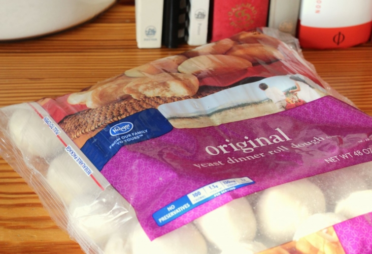

.png)
.PNG)
.PNG)
.PNG)
.PNG)
.PNG)
.JPG)
.JPG)
.PNG)
.PNG)


How was your weekend? I hope it was a good one. Our Sunday supper this weekend was actually Sunday’s lunch because we had a birthday dinner to attend on Sunday night. I have been wanting to try out several new recipes lately, and I thought they would make a good meal altogether. Bad idea. All of the recipes were heavy in Parmesan (except for the dessert 🙂 ), so it was just too much Parmesan and too salty. So I am revamping all of the recipes here, and the next time I prepare this it will be much better. Here was the menu:
Did you know that January is National Soup Month; January 25 was National Soup Swap Day, and February 4 is apparently Homemade Soup Day? Just a little bit of trivia for your brain today. 🙂 Anyway, I have been wanting to try out a lasagna soup. Since it was an Italian sort of soup, I wanted a bread that worked well with that. We have a local restaurant that serves divine rolls in a bowl swimming in garlic butter, and that was the sort of bread I thought would be perfect with our soup. I found a recipe for garlic cheese rolls here that sounded great. I am going to show you how I made them, but I also want to tell you what I will do differently next time.
It started with frozen bread dough…like Rich’s or Rhodes. I happened to have used the Kroger brand. I took them out, and let them thaw for about 45 minutes.
 After the 45 minutes, I used scissors to cut them in half.
After the 45 minutes, I used scissors to cut them in half.
Then I melted a stick of butter in a bowl, added spices, and rolled the cut up pieces in it. In the recipe, Parmesan cheese is added at this point, and the pieces are coated in it. Omitting the Parmesan is one of the changes I will make with the recipe.
After all the pieces were thoroughly coated, I covered a large casserole dish (9X13) with nonstick spray, and placed all the pieces in it. Then I sprayed a piece of plastic wrap with nonstick spray, placed it over the rolls, and let them rise for 2 hours in a warm room.
We also melted butter, and stirred in some minced garlic to go on it afterwards. That step is not needed either. Here they are fresh out of the oven.
And here is my improved version for the next time I make them:
Now for the soup…It tasted very good, and my family liked it. In fact, my son who does not normally eat soup added habanero pepper slices to his and really liked it. I wanted it to have more of the flavor of the traditional lasagna that I make, so I am tweaking the recipe by changing the meat from Italian sausage to lean ground beef, leaving out the salt, and changing the seasoning some. I found the original recipe here, and here is my alternate version to make next time.
It’s the cheeses and basil dropped in the middle of the servings that really make this soup.
For this Italian food soup, I knew I wanted to try out Jenny Steffens Hobick’s Italian Restaurant Salad. (Click here for her recipe.) There are only a couple of things that I would change. First, I am the only one in our family that likes artichoke hearts, so they would be left out from the original. Several of us love beets, so I would add them to it (and some garbanzo beans, too.) It is a good and easy salad.
Fore dessert, a Paula Deen recipe was my choice – a Chocolate Cream Cheese Pound Cake. The recipe was featured on Bake or Break several years ago (recipe here.)
The batter was oh.my.gosh.good…why do we even have to bake it???
The cake turned out alright. The post with the recipe said that it was a little dry, and I would agree with that. I think cutting back the cooking time about 10 minutes would help improve its moistness. It is not a real sweet chocolate pound cake, which actually makes it very good for topping with ice cream (especially coffee ice cream!)
I have been on the hunt for several years for a chocolate pound cake that is sweet…one that does not need anything added to it…just a plain warm slice. My favorite plain pound cake that fits the bill for sweetness is a cream cheese pound cake, so I was hoping that this version was going to be the one. But it wasn’t…so the hunt is still on.
That brings us to the end of our Sunday supper. Do any of you have a perfect chocolate pound cake recipe? I would love to try a different recipe some time to see if it is what I have been looking for.
I love hearing from you (whether you have the perfect recipe or not. 🙂 )
p.s. They are calling for snow here this week. Can you believe it?! Makes me want to run up to the attic, bring down the Christmas wreaths and garlands, and decorate the outside so I can photograph our house “for Christmas in the snow.” LOL


.PNG)
So, we had another round of snow late last night, only a “dusting” as they say. However, I’ve noticed that most people still have all their Christmas wreaths up and it is almost February… But, with the fierce cold and once a week storms, well, it’s like a Christmas card setting around here. I say, it’s up with the Valentine décor tomorrow, snow or no. I would have enjoyed that meal on Sunday, everything looked delish and as much as I love dessert, the soup is calling my name. We’ll be having a lot of days to make up at school for, I fear, there’s more snow to come. (I’d be happy if it went above twenty for a few days!)
————————————————————–
That is amazing that Christmas is still up. I would LOVE it (as I am STILL listening to Christmas music here. 🙂 ) It is supposed to be 60 degrees here this weekend. At least you are consistent in your temperature. We are never the same from one week to the next!
Stay warm!
Kelly
The best pound cake recipe I’ve ever, ever eaten is a Barefoot Contessa orange pound cake. Wow. It’s a life changer and a crowd pleaser. Amazing. I would use that recipe – get rid of the orange zest and juice – throw in a couple of TB’s of cocoa (and maybe some instant coffee which always goes well with chocolate) and I bet you’d be in business. Her pound cake is great with tea or an Easter dessert. Yum. Love your blog!
———————————————————–
Thank you Elle. I think I will try that pound cake in the orange version. Everything I eat doesn’t have to be chocolate. LOL Thanks for the recommendation!
Kelly
Fantastic Sunday Supper Kelly…with the snow coming this week, I stocked up on soup ingredients!…I have a wonderful lemon pound cake recipe from the Denver Jr. League cookbook and I think I saw a chocolate one too…Got snow???…we are expecting 8 inches here!…
————————————————————-
Very smart of you to be prepared with soup! I hope you got all the snow you wanted. 🙂
Kelly
Kelly…I, too, made this very same soup this past weekend. It was delicious. I did use sweet Italian sausage, but ground beef or a combination of sausage and beef or even turkey sausage would be great. Keep warm. We’re in the single digits in the Cleveland area this morning. Brrrrrr!
————————————————————
Great minds think alike, Marnie! A combination of the meats would probably be good to spice it up some. Single digit temps are just too cold to me! I hope you are staying warm.
Kelly
Kelly,
I have been wanting to try that lasagna soup recipe also. I pinned it awhile back and it is now on the agenda for next weekend. I think I will make parmesan drop biscuits to go with it. As far as a delicious chocolate pound cake recipe goes…the only one I have found I like is from Tastefully Simple. It’s not exactly from scratch but it is hard to beat. They also have an Almond pound cake that is wonderful topped with chocolate ganache and/or strawberries.
—————————————————————-
Parmesan drop biscuits would be perfect with that soup, and both of those cakes sound delicious, Dawn!
Kelly
Really, National Soup Month? Who makes this stuff up? Well, everything in your post looks delicious. I love this kind of meal. I have been making soups since late fall. I like to freeze some and then have it handy for a quick Saturday lunch. I just made Tomato Herb soup last week. My son even took some to work. My daughter likes to tease me about my one pot meals, but it is so tummy warming. Well, she has been my baker recently. She made us a chocolate cake (of the box kind) last week and chocolate chip cookies on Saturday. Nothing better than a hot cookie just out of the oven. Yum. We are definately in comfort mode big time here in the Midwest. How can we not be? Did you get snow today? You are such a stitch, wanting to do a photo shoot. I will dream of warmer days to come for now. Have a wonderful week Kelly.
—————————————————————-
Probably the soup companies made up that holiday! Nothing wrong with one pot meals. I would certainly agree with you on loving a hot cookie fresh from the oven. Yum!
Kelly
Kelly,
The soup looks wonderful and great for a cold day like we are having. We are in the minus numbers here and we are only in Pennsylvania. I would love to send you some of our snow…we didn,t have any for Christmas….gotta love that!
Bundle up!
Jeanne
————————————————————-
Minus numbers must be terrible. I would like more snow, so send yours on. 🙂 Can’t believe you didn’t have any for Christmas. What a shame!
Kelly
I’m late to this party, but who cares? 😉 Never tried Lasagna Soup but have heard about it. We make that salad alot here, one of our favorite pizza places makes it, with their own sweet Italian dressing, yum! And I’ve done the rolls before too, so almost felt like I had lunch with y’all!
My current favorite soup is Pioneer Woman’s Perfect Potato Soup, although I too changed it a bit. I cheat and mix cream of mushroom soup, cream cheese and chicken broth together, heat it a bit, add shredded frozen hash browns, one shredded carrot and half a shredded onion. Simmer until potatoes are tender, then serve, topped with shredded cheddar and chopped green onion. You can also cook the potatoes in the chicken broth, and mix the soup and cream cheese together, then add the potatoes with the broth.
Hope you got your snow! We just have tundra temps!
————————————————————-
How funny that you felt like you had eaten lunch with us! LOL Your potato soup sounds great if you leave out the carrot…bad girl here does not like them raw or cooked or however anyone wants to prepare them. I had potato just today.
Hope your tundra temps warm up.
Kelly
I have a couple of great chocolate pound cake recipes, which I think came from my mother I will dig them up and set them along. Both are sweet and moist.
I have tried a couple of cake recipes from PD and both have been dry which was very disappointing because they both called for lots of stuff.
This meal looks fabulous, although rich. I will have to try them. I think I need to get to the store early because we are getting another blast of cold weather starting tomorrow.
————————————————————-
Thank you for sending me the cake recipes. Can’t wait to try them! That is interesting that Paula Deen’s cakes have been dry. I will say that our cake tasted much better the next day after it had cooled. Maybe being warm made it not tastes sweet. Everyone seems to be getting blasted with super cold air. Bundle up and stay inside!
Kelly
Everything you make always looks so beautiful and delicious and you hit another home run with this one! It’s so darn cold and snow is coming down like crazy here in the Rockies so this would be a great dinner to eat by the fire!!!
Another of our favorite soups is called “steak soup” which was shared by a blogger – Marsha from Linderhof. That soup has been made so many times now that I can do it in my sleep! It uses ground sirloin and is so hearty and delicious. It’s been a family staple for several years now. And I make it with the no knead bucket bread – makes beautiful boules that are so crusty and tasty with soup plus the house smells so good with the aroma of fresh made bread and soup.
Can I send some of our snow to you? Be more than happy to! In the meantime, I need to put the bread in the oven and then I can
cozy up with my current book “The Goldfinch” and read for a bit… ah, guilty pleasures!
Hugs, Pippa
———————————————————–
Send me some snow, and send me your steak soup and bread! Those sound heavenly!
Kelly
It all looks so good! We are having “Souper Bowl Sunday” at church this coming Sunday. I think I just might change from my vegetable beef to this! The salad looks wonderful! Looks like a meal to add to my collection! thanks for sharing!
————————————————————-
Jayne, we had a “Souper Bowl and Salad” lunch at school today. Lots of yummies! I bet the one at your church will be great as well. The desserts were divine at ours today. I tried an orange trifle that was soooo good…need to get the recipe for that one.
Kelly
Kelly,
The soup looks delicious and rich. I can see why you may have felt there was too much Parmesan, using the original recipes. I like your version on each so much better. I noticed you kept referring to the other brand of frozen rolls to start with…were the generic Kroeger rolls not as good? I don’t think we have either brand you mentioned here, Bridgeford is the brand that comes to mind for frozen rolls that rise.
It all looked delicious. We love soup in the winter months with salad and crusty bread.
xo,
Karen
————————————————————
Karen, the Kroger rolls were very good. I just didn’t know what brand everyone had available in their part of the country. We have Bridgeford here also, and it would be fine. My family loves any of those rolls that have to rise for hours.
Kelly
Yum! I’ll be right there for left-overs. 🙂 I didn’t know there was such a thing as national soup month, but it’s funny because I have been making a lot of soups lately. I think mostly to take the chill off. In fact tonight I’m trying a cheeseburger soup for the first time. Wish me luck!
———————————————————-
I have been wanting to try a cheeseburger soup. That may very well be the next one on our soup menu. Hope yours turned out great! Soup has definitely been needed around here with all this super cold weather.
Enjoy the warm weather this weekend.
Kelly
I can’t wait to have an Italian dinner night. My husband and I are going to fight over the soup, rolls, salad AND dessert. I wonder if I should double the recipes??? Hmmm, something to think about. As always, thanks for sharing.
————————————————————
Oh there is plenty here, Polly. You won’t have to double it. So be nice, and share! 🙂 Hope you enjoy the meal when you make it.
Kelly
Have you tried Nelle Shelton’s chocolate chip pound cake? It is delicious, and if you eat it warm, you will enjoy it even more!
———————————————————–
I haven’t made that one, Bonnie, but I will have to try it. Warm chocolate chips would be hard to resist!
Kelly
Yummo!! I am going to try those rolls for sure! I have a lasagna soup recipe that we enjoy as well. My mother makes a good chocolate pound cake, in fact she made it as our grooms cake when we were married. I am more partial to plain pound cakes myself but I will see if I can get her recipe and post it on my blog. Have fun in the snow. All we are getting in Alabama is COLD weather.
————————————————————
A chocolate pound cake for the groom’s cake would be delicious, and I would prefer that over the traditional bride’s cake. (Just the opposite of your taste. LOL) I know you got some snow flurries this week – more than just cold. Glad your family was safe in the storm. I predict we will all get more snow in February.
Kelly
Wow- you went all out! The meal sounds great and I plan to give it a try. Do you end up with lots of leftovers? We have an empty nest so there is always extra and my husband doesn’t like leftovers. I gotta train him better!
————————————————————-
We had some leftover soup that has been a blessing to have this week with all our cold weather. There was leftover salad too, but not worth saving because of all the dressing on it. It might be better to just have each person pour the dressing on their salad at the time they eat so that if there are leftovers they can be served another day. I am not usually a fan of leftovers, like your husband, but soup is great reheated.
Kelly
I’m two days late, but my favorite soup recipe to swap is Ina Garten’s Mexican Chicken soup. Every time I make it, everyone loves it. The only thing I change is no jalapenos and I usually double the corn tortillas. Hope you get your snow! As far as I’m concerned, we’ve had the perfect winter here in Chicago….lots and lots of snow.
———————————————————–
That sounds like a good soup, Barb. My family likes spicy food, so we would probably like the jalapenos in it, and doubling the tortillas probably adds great texture. Enjoy all your snow!
Kelly
Wow, that all sounds so good! It has definitely been soup weather around here. Kids were off on Friday and had a two hour delay today. They most likely will be off tomorrow and Wednesday too since it’s supposed to be really frigid, I still don’t feel like we’ve gotten back to normal since Christmas.
I hope you get your snow day. You should SO get out the Christmas decorations! (I dare ‘ya! LOL!) That would be a great story when you return to school. “What did YOU do on your snow day?” “I put up my CHRISTMAS decorations!”
————————————————————–
I really should have done the Christmas decorations, Jill, but it just takes soooo much time to put them up and to take them down. (Of course, if they could have stayed up until next year…ha ha.) I hope your children don’t have too much school to make up from this very severe winter.
Kelly
What a treat!! Love soup and made a roast beef on Saturday so I could make soup on Sunday!! Also made a Snowball cake to go along to celebrate one month since Christmas!! Got so excited when I saw the weather forecast for your area tomorrow— I think you are going to get your SNOW day!! I still have a few snowflakes mixed in with my Valentine hearts!! It has been a real winter for a lot of folks– I’ve had to wear sweaters now for awhile— which normally I only do a couple a days during the winter!! Fingers crossed for some pretty snowflakes up your way!! Take pictures!!
————————————————————
Sweaters in Florida…now we know it IS cold! 🙂 Great idea to make that roast beef do double duty for soup. Gosh has it already been a month since Christmas???? Seems like it was JUST New Year’s Eve.
Kelly
Oh Kelly, you’re killing me! Being dairy free (mostly, I can do butter)I would not be able to indulge in these recipes, but they look oh so good! Actually, I could make the lasagna soup and rolls, just leave out the cheese for me, and the rest of the family could eat it. I may just try them;) I do enjoy the recipes, thanks for always being such an inspiration.
————————————————————-
Aw man, I hate that you can’t have dairy…that cuts out so many good things. You could make the soup, but the cheeses in the center are really what make this soup taste like lasagna. Your family could enjoy it, but that’s not fun for you. I wonder if there are some good substitutes that you could use in place of the dairy products.
Kelly
Kelly-
This soup recipe sounds yummy & I can’t wait to try it! I sent my 2 girls who eat soup 12 months out of the year, back to college w/homemade soup a few weeks ago and can’t wait to tell them to thaw & enjoy a bowl on Feb. 4th! I also hope you get the snow you have long awaited for & don’t forget to share pictures!
————————————————————-
How sweet of you to send soup with your daughters in college! We did get a little snow finally (but I still want more!) 🙂
Kelly
Mmmmmmhhhhhh, sounds delicious!!! Thank you Kelly for sharing those recipes and your experience with them! I definitely will have to try to make the soup and the rolls some time!
On Saturday I made a version of the chicken recipe you shared last week and my husband and I really liked it (it was only a version as I live in Germany and can’t always get the exact same ingredients). The girls were moaning but they’re 7 and 4 and kinda do at most meals right now, especially when I try something new. Can’t have fish fingers or Spaghetti all the time though. Did your kids do that too when they were that age? Anyway, I will definitely make that recipe again!
And now I’ve got more new yummy recipes to try! Thanks!
Have a great week!
————————————————————
I am glad you were able to make the casserole, Michele. My kids did that too, and my middle one still does! 🙂 It has been a cold week here…a good one for comfort food.
Enjoy your weekend!
Kelly